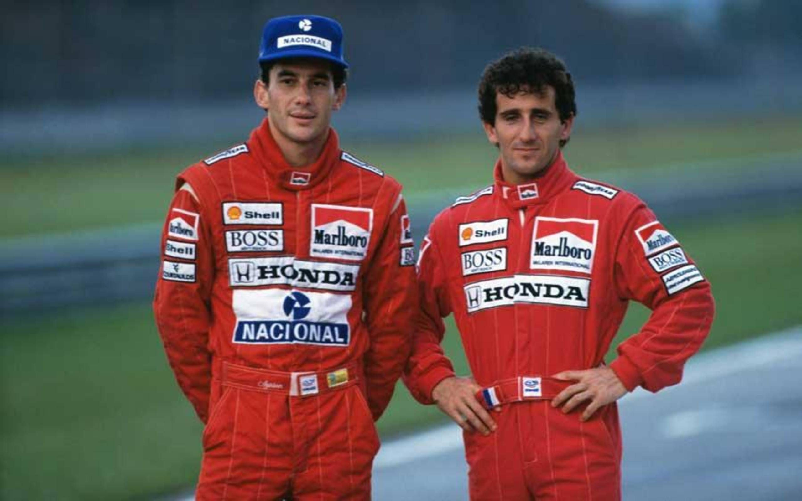

While the first world championship race took place in the year 1950, the Formula One series can be dated all the way back to the 1920s with the European Drivers’ Championship. Named after the set of rules all participants and cars must adhere to, plans for an F1 championship were made and set. Unfortunately, they were quickly shelved due to the onset of World War II. After the war ended, the following few years slowly built up to the official start of the sport. In 1946, a new formula was agreed upon, and the first ever F1 grand prix was held at Turin, Italy. However, no proper World Drivers’ Championship was formalized, which was the case until 1947. Three years later on the 13th of May 1950, the first ever World Championship Formula One Race was held at the Silverstone Circuit in Silverstone, England. And in 1958, a championship for the constructors soon followed.
The Early Years
There were more than twenty events for the first full season, but only seven of these races counted towards the title, and the fight was narrowly won by the Italian Giuseppe Farina in his Alfa Romeo over his Argentinian teammate Juan Manuel Fangio. However, Fangio would go on to become champion the following season. Not only that, but he would also go on to win the ‘54, ’55, ’56, and ‘57 titles, with his streak only being interrupted by two-time world champion Alberto Ascari mainly due to injury. Nicknamed El Maestro, Fangio won twenty-four of his fifty-two race entries, a record that still holds to this day. He would also go on to hold the record of number of F1 drivers’ championships for forty-five years until it was broken by German Ferrari driver Michael Schumacher in 2003.
This period was dominated by teams led by road-car manufacturers such as Alfa Romeo, Maserati, Ferrari, and Mercedes. For the first few seasons, the cars were front-engined with narrow tires, and in the ‘52 and ‘53 world championships, the cars followed smaller and less powerful Formula 2 regulations due to the lack of F1 cars. When F1 regulations returned in 1954, Mercedes then joined the competition and won the drivers’ championship for two years with Fangio. However, they would soon withdraw from motor racing entirely until 1987 due to the 1955 Le Mans disaster. This was a crash that occurred in the 24 Hours of Le Mans which killed eighty-three spectators and French driver Pierre Levegh.
Technological Renaissance
The following few years saw some big technological developments within the sport. Typical F1 cars at the time had their engines at the front, but all of that was changed when Cooper introduced the mid-engined T43 in 1957. This design’s superiority would soon be proven by Australian Jack Brabham winning the ‘59, ‘60, and ‘66 championships. By 1961, all constructors had switched to the mid-engine design.
In the 1950s, drivers sat upright and practically on the car. In the1960s meanwhile, the drivers sat in the car. Compared to the previous decade, the cockpits were much tighter and less spacious due to the cars becoming smaller and more streamlined. Slowly, aerodynamics were becoming an important feature in car design, with aerofoils starting to appear in the late 60s. Ground effect aerodynamics was then introduced to F1 in the late 1970s by Lotus, providing such large amounts of downforce and cornering speed that the governing body banned it due to safety concerns. They were banned in 1983, but they are making a resurgence for the 2021 season.
Dark Days
From the early 50s to the late 70s, forty-one drivers were killed at an F1 World Championship Event. Seven additional drivers would be killed in the following decades, the most recent of which being Jules Bianchi who died in 2015 following a crash in the 2014 Japanese Grand Prix. The list includes two-time world champion Jim Clark, the first and only posthumous world champion Jochen Rindt, and three-time world champion Ayrton Senna, widely considered as one of, if not, the greatest driver/s of all time.
The rivalry between James Hunt and Niki Lauda started in this period. Lauda and his Ferrari got the upper hand on Hunt and his Hesketh in 1975, with the former winning the title. The following year however, Hunt moved to McLaren, and what followed was one of the most dramatic title fights in Formula One history. Ferrari was looking to run away with the title once again, but Lauda would have a massive crash in Germany that left him fighting for his life due to serious burns and lung damage.
Likely that the 1975 champion would not survive, Lauda was administered his last rites while still being alive in the hospital. A miraculous recovery would astonishingly let him return for the last few races, but in the end, Lauda would lose the championship to Hunt by a single point. He would withdraw from the race, saying that the track conditions were simply too dangerous.
It took until 1967 for seatbelts to become compulsory. In 1972, the six-point seat belt was introduced. Track hospitals and helicopters were then made necessary in 1980 and 1986 respectively. By the 2000s, the cockpit walls were raised and the Head-and-Neck Support System (HANS) device was introduced, and in 2018, the then controversial but now widely accepted halo was brought to Formula One.
Cash is King
Along with technology, the business of F1 itself was evolving. After buying the Brabham team in 1971, Bernie Ecclestone gained a seat on the Formula One Constructors’ Association, and by 1978, he was its president. Under his lead, he negotiated for the trackside advertising of all circuits in exchange for Formula One as a package to circuit owners, as well as the revenue from television viewership. Despite his many controversies over the years which include praising Hitler, sexism, misogyny, and bribery, there is no doubt that Ecclestone transformed the competition into the multibillion-dollar business it is now. His legacy, however, will always and rightfully so be that of a very flawed man.
Menacing Sounds
Ground effect aerodynamics was banned in 1983. In exchange of that was the introduction of the roaring turbocharged engine capable of reaching 700 brake horsepower, and it undoubtedly succeeded as the 1983 title was one by Nelson Piquet in a turbocharged engine. By 1986, some engines such as the BMW’s were capable of reaching an astonishing 1,300 bhp in short bursts during qualifying and 1,100 bhp during the races. These were the most powerful open-wheel circuit racing cars ever, and Formula One teams were able to flourish. This led to this period being called one of the greatest in F1’s history, but it was still shrouded with the deaths of talents Elio de Angelis and Gilles Villeuneve.
Niki Lauda, coming out of retirement in 1982, won the championship once more in 1984. This would be the closest title fight ever, with the Austrian beating McLaren teammate Alain Prost by only 0.5 points. By that point, the French Prost had become runner-up two times. However, his maiden championship would come soon in 1985, and he would once again win in 1986. In the latter year, the Williams team looked unstoppable with their line-up of Nelson Piquet and Nigel Mansell, but they too often took too many points from each other, and that opened the gap for the Frenchman to steal the championship.
A Fierce Rivalry
The 1988-1980 years saw one of the most intense and fierce rivalries in the history of Formula One. This was the last season for turbocharged engines, and there was a lot of speculation on who would win the championship. When it was announced that Ayrton Senna would drive for the McLaren team alongside Alain Prost, many expected the then two-time world champion Frenchman to dominate, but it would be the Brazilian Senna who would take the title that year. Together, they won 15 of the 16 races that were held that season, making their MP4/4 one of the most dominant F1 cars ever built.
Tensions rose soon after though, with Prost believing Senna was favored by the team. He would unfortunately be proven right, as their engine supplier Honda liked the Brazilian’s aggressive driving style more compared to his calculated racing strategy. With the end of the turbocharger era in 1989, Prost won his third world championship with McLaren in incredibly controversial circumstances. Senna and Prost would collide in the Japanese Grand Prix, the final race of the season, leading to Prost retiring and handing his teammate the title. However, Senna would be disqualified for incorrectly re-entering the track, consequently handing his rival the title. Prost would soon leave the McLaren team for Ferrari, finding working with Ayrton as “impossible”.
The following year’s Japanese Grand Prix would once again prove to be a mess. It was the penultimate race of the season, and Senna knew that he would win the championship if he finished ahead of Prost that race or if both of them retired. He would start from pole position, but was distressed as his starting point was on the dirty side of the track and not the racing line. So, he vowed that he would take the lead at the first corner. Prost got the jump on Senna at the start, but the latter dived down the inside on a fast corner and led to the pair once again colliding. Senna was crowned champion, and he would once again win it all in 1991. Prost meanwhile was sacked by Ferrari in 1991 for his public criticism of the team, and he would have a one-year hiatus from the sport, coming back with Williams in 1993.
Gone Too Soon
By 1992, McLaren’s period of domination was over. Nigel Mansell would win with Williams while Senna could only reach fourth in the standings. 1993 would be another year of disappointment, with Prost returning to the sport and winning his fourth and final world championship; meanwhile, Senna would only be second. The Frenchman would retire, opening up a spot on the Williams team.
In 1994, Senna replaced Porst, while the Benetton team looked strong with their Ford-powered engines and a certain driver by the name of Michael Schumacher. Driver aids would be banned, leading to a tumultuous year for all the wrong reasons. With almost a decade since F1’s last fatality, an air of invincibility was present. Cars were getting faster, and it was believed that the cars were inherently safe. Everyone would be proven wrong in the 1994 San Marino Grand Prix, known as one of the darkest days of the sport. Rubens Barrichello would sustain injuries in practice, Roland Ratzenberger would be killed in qualifying, and Ayrton Senna would crash heavily in the race.
Just two weeks later in the Monaco Grand Prix, Austrian Karl Wendlinger would be left in a coma. The sudden incidents, which included the deat of arguably the best driver on the grid, led to the FIA swiftly introducing harsh major changes from that year onwards to increase safety. These changes included adding chicanes to fast corners such as Eau Rouge for the 1994 season only. The year was made all the more chaotic with a tense title fight between Benetton’s Schumacher and William’s Damon Hill. The German would win the championship in controversial circumstances in 1994 with a collision at the final race.
Flying Finn
Schumacher once again became champion in 1995, and after he moved to Ferrari, it was Williams’ time to shine. Damon Hill would finally get a title in 1996, and Canadian Jacques Villenueve in just his second full season became the champion in 1997 after Michael intentionally collided into him, was sent into the gravel, retired from the race, and then disqualified. However, if there was one person the German feared, it would be Finland’s Mika Häkkinen.
Schumacher and Villeneueve could do nothing but watch as Häkkinen flew away with the title in 1998 with McLaren. An injury for Michael at Silverstone left his teammate Eddie Irvine as Ferrari’s leader, but his best efforts would only get his team the constructors’ championship. He would lose by just two points to the Finn.
The Prancing Horse
After a long period of disappointment, losses, and close calls, Scuderia Ferrari would finally get its first ever drivers’ championship in twenty-one years in the year 2000. Michael Schumacher, a then two-time world champion, fought closely with Mika Häkkinen, a fellow two-time champion who had won the past two titles. Driving in equal cars, the German would ultimately win it all in the Japanese Grand Prix and become the first three-time world champion since Senna in 1991. By 2001, Ferrari had started to leave the rest of the grid behind; Schumacher clinched the title with four races to go.
In 2002, it was more of the same. Ferrari would win 15 of the 17 races that year, and Michael won the championship with six races to go, a record which still holds to this day. He finished every race on the podium, and he had more points than second and third in the drivers’ standings combined. Despite rule changes opposing the scarlet team in order to avoid another year of dominance in 2003, Ferrari still pulled ahead. The newly crowned six-time world champion broke Fangio’s record of five, taking the championship with him in Suzuka by just two points.
The final year of Scuderia Ferrari’s golden age was in 2004. While they struggled in the previous year, they got up to speed once more. Their car, the F2004, was so surprisingly fast, they had to investigate whether or not they had done something wrong. The pace was real however, and the team, once again led by Schumacher, won both the constructors’ and drivers’ championships with ease. Twelve of the first thirteen races were won by Michael himself, fifteen of the eighteen races that year was won by Ferrari, and it was unfortunately his last drivers’ championship.
End of an Era
2004 was the last dance for Michael Schumacher and Ferrari. Come the following year in 2005, and the Italian team who had dominated the past five years of the sport rapidly declined in performance. Due to the tire-change ban that only allowed refuelling during pit stops, Ferrari’s tire manufacturer Bridgestone simply could not keep up with its competitor Michelin. The early part of the season was dominated by the Renault of Fernando Alonso, while Kimi Räikkönen and his McLaren had a stronger period in the latter part of the year. However, a series of poor reliability and bad luck gave Alonso the title in Brazil. Together, these two teams won all but one race: the farcical 2005 United States Grand Prix that saw only six cars enter the race and gave Ferrari its only win that season.
V8 Madness
The V8 era of Formula One started in the 2006 season. It was also marked as the last season where there were two different tire manufacturers as Michelin would leave the sport come 2007. Renault once again got off on a good start, establishing an early lead in both the drivers’ and constructors’ championships. Ferrari started to catch up by the latter part of the season, and they reduced Alonso’s lead on Michael to just two points after they won in Italy. The results of this race were largely overshadowed however by Schumacher’s announcement of his retirement after fifteen years of competing where he achieved ninety-one wins and seven championships, a record that would stand until 2020.
An engine failure in Japan and an early tire puncture in Brazil left Michael as runner-up in his final year with Ferrari. He would come back in 2010 to 2012 with Mercedes, but he would only be able to achieve a single podium. The following two seasons were then just incredibly dramatic. Lewis Hamilton’s debut with McLaren in 2007 shocked everyone when he achieved nine consecutive podiums in his first nine races, as well as a grand prix win in just his sixth. This was made all the more impressive as his teammate was none other than Fernando Alonso, the man who beat Michael Schumacher the past two seasons.
Hamilton had the chance to win the title in his rookie season, but an error in China and a mechanical failure in Brazil left him runner-up. Kimi Räikkönen, who had moved to the scarlet team after Schumacher retired, would win the championship by a single point. He had overturned a 17-point deficit in the last two races. The next year however would be McLaren dishing back what they had experienced in 2007. Hamilton would clinch the title in the last corner of the last lap of the last grand prix to win by a single point as well.
2009 would then prove to be an underdog story. Honda, backing out of Formula One after the global recession, sold the team to their technical director Ross Brawn for just £1. Honda decided to focus on the 2009 rule changes, and this would prove to be a good decision as it put them in the right spot for the start of the season. Many did not expect it, but Brawn GP got a 1-2 finish in its first ever race, a feat that had not happened since Mercedes’ debut in the 1954 French Grand Prix. Jenson Button would clinch the title in Brazil, and with teammate Rubens Barrichello also won the constructors’ championship. They won 8 of the 17 races that season, and they are the only team to achieve a 100% championship success rate.
Flying Bulls
The 2010s were ushered in by four years of utter domination by the Red Bulls of Mark Webber and Sebastian Vettel, with the latter winning those four consecutive championships. The ‘10 season had four drivers able to win at the last race in Abu Dhabi: two-time world champion Fernando Alonso, F1 veteran Mark Webber, the young and energized Sebastian Vettel, and 2008 world champion Lewis Hamilton. In the end, Vettel would win by just four points over Alonso.
The ‘11 and ‘13 seasons were just purely dominant years for Vettel. The youngest world champion successfully defended his title the following year by winning eleven races and being ahead of runner-up Jenson Button by 122 points. He would then become champion again in ‘13 for the fourth consecutive year by winning thirteen races and beating runner-up Alonso by 155 points.
Meanwhile, the ‘12 season was tumultuous to say the least. Seven different drivers won the first seven races, a streak that would remain until Fernando Alonso won the European Grand Prix, winning him his second race of the year. This year would remain as one of the best seasons in possibly the entirety of F1 history, with the Spaniard Alonso pushing an uncompetitive Ferrari to the front of the grid. The final race in Brazil was dramatic, with Vettel being spun out in the first lap. However, a strong recovery drive in wet conditions allowed him to become a three-time world champion by just three points.
Silver Arrows
Major regulation changes in 2014 made the teams switch their V8 engines for V6 hybrids, and it was Mercedes got the jumpstart and emerged as the new dominant force to beat, a feat that is yet to be done. Lewis Hamilton won the title that year, crowning him as a two-time champion of the world. Together with his teammate Nico Rosberg, Mercedes won 16 out of the 19 races that year; the remaining three were won by Daniel Ricciado of Red Bull. The same can be said about the following year, with Hamilton once again winning the championship. The only difference is that it was Sebastian Vettel of Ferrari who took the three races the silver arrows did not win.
However, 2016 would finally be the year for Rosberg. After three painful years of toxicity and fighting with his teammate who was his childhood best friend, he won the championship by just five points. He would subsequently retire that year, achieving what his father Keke Rosberg did in 1982, and be replaced by Finn Valtteri Bottas. The next two years for Mercedes and Hamilton saw a close title fight with Ferrari’s Sebastian Vettel. In both the 2017 and 2018 seasons, the Maranello team had the upper hand in the early parts of the season. However, reliability issues in 2017 and crucial driver errors from Vettel in 2018 gave Mercedes its fifth straight title. With no challengers left, the silver arrows easily beat the field in 2019 and 2020.
Empty Grandstands
The 2020 season was set to start on the 15th of March 2020, but hours before the first practice sessions were held, the event was cancelled due to the pandemic arriving in Australia. It was postponed to July and was supposed to have a record twenty-two events, but it was cut down to seventeen due to cancellations. In response to the pandemic, the majority of races were run behind closed doors, with others such as the Eifel Grand Prix in Germany having reduced capacity.
Mercedes won its seventh straight title, with Lewis tying the record for most world championships at seven with Michael Schumacher and beating the German’s ninety-one win record at the Portuguese Grand Prix. Despite being another year of domination for the silver arrows, the season was well-received with the addition of new races in Portugal and the return to Imola, Nürburgring, and fan-favorite Turkey. It also had the slow rise of Red Bull's fight with Mercedes, and a surprise underdog win from midfield team AlphaTauri in Italy. They bulls would win the final race of the season in Abu Dhabi, and as of the 2021 United States Grand Prix, they are leading the championship.
13 of the 17 races were won by the champion Mercedes team, and they were 254 points ahead of Red Bull in the constructors' standings.